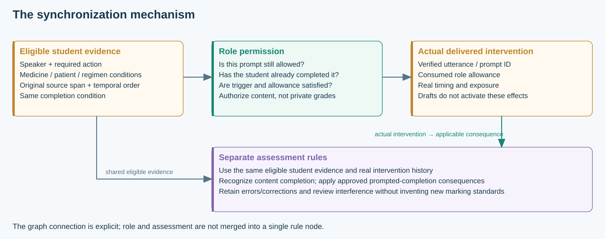

Why synchronize role simulation and assessment?
Start from a capable conventional system; test the added value of explicit shared evidence.
A complete transcript and RAG are a valid strong baseline
A well-designed conventional AI OSCE is not inherently incapable of following source, timing or rubric rules. MedSimAI provides conversational case simulation and a separate evidence-grounded assessment pipeline. [R34·1] [R34·2] Our system A retains instructor-authored cases, complete preceding dialogue, explicit role policies, delivered-prompt records, ordinary output auditing and the original station rubric. The same approved pharmacy retrieval service is available to A and B.
The baseline’s limitation is an empirical question: when role permission and criterion completion are interpreted independently, how consistently do the two decisions use the same evidence conditions? Giving the LLM all the information makes a correct result possible, but does not establish reproducible execution of every dependency.
Calling this a “MedSimAI-inspired, RAG-augmented comparator” avoids attributing our retrieval component or pharmacy rules to MedSimAI itself. Likewise, B’s advantage cannot be manufactured by removing A’s prompt history, evidence quotes or existing safety checks.
What the literature establishes, and what it does not
| Evidence | Supported inference | Not established |
|---|---|---|
| Bakhaya: qualitative pharmacy reports of excessive knowledge/disclosure and limitations in treatment feedback. [R03·2] [R03·3] | Disclosure and feedback need separate objective evaluation. | No measured causal effect of decoupled architecture. |
| MedSimAI: rubric-driven feedback and independent human-score comparison. [R34·3] [R34·4] | A strong baseline exists; exact agreement deserves its own outcome. | No general proof that all conventional systems are unstable. |
| French OSCE evaluation: source eligibility and programmatic combinations. [R14·2] [R14·4] | Content presence is not equivalent to student demonstration. | Source attribution and logical aggregation are not new by themselves. |
| Long-context evidence studies. [R36·1] [R38·2] [R38·4] | Evidence association can be difficult despite a large input window. | No demonstrated CUHK context overflow or measured DualGraph accuracy gain. |
The pharmacy-specific motivation is a conditional assessment problem: several medicines, a patient’s circumstances, a selected regimen, inquiry order, delivered clues and later corrections may jointly determine a result. The approved CUHK station materials instantiate these conditions. CMM provides a broader medication-assessment foundation; it is not a replacement scoring rubric. [R23·1] Historical context-length audit.
What the closest methods already solve
| Method | Existing contribution | DualGraph-OSCE’s additional task |
|---|---|---|
| GSR [R07·1] [R07·2] | Compile rubrics into typed evaluation graphs; separate leaf semantics and deterministic aggregation. | Execute common evidence conditions during dialogue to authorize a role action, then propagate actual delivery into the assessment conditions. |
| LogiDebrief [R24·1] [R24·2] | Combine semantic judgements and signal-temporal logic; consider trainee behaviour and caller responses. | Use the conditions before the AI speaks, and commit the resulting intervention as an event that affects later assessment. |
| Rulers [R08·2] | Ground judgements in typed evidence and calibrated criteria. | Bind evidence to student actions and station-specific medication/regimen conditions on both decision paths. |
| MedKGEval [R12·2] [R12·3] | Graph-driven multi-turn clinical agents, controlled disclosure and correctness/completeness evaluation. | Apply fixed faculty rules to human-student pharmacy OSCEs, including prompt consequences and retained correction history. |
| Runtime temporal monitoring [R10·3] [R35·2] | Online policies, object identity and intervention before delivery. | Validate the linked permission–assessment effect, not merely policy compliance or an isolated monitor. |
| ArgRAG [R11·1] | Explainable support/attack retrieval and argument reasoning. | Use typed pedagogical dependencies, provenance and actual delivery rather than identifying novelty with a generic support/attack graph. |
Trevena et al. also implement graph-modelled expert rules with duration, conditions and patient-state updates in physiological simulation. [R45·1] [R45·2] This is prior art for graph rule execution, not a role-and-rubric OSCE system.
The literature provides foundations and close precedents. Our defensible contribution is the pharmacy-OSCE joint execution protocol and its controlled evidence, not a claim that no prior graph or real-time judge exists.Where the innovation lies
Shared qualification: the same operational definition of “the student has demonstrated this requirement” is referenced by both a role trigger and a marking node. It includes eligible source, speech act, drug–patient–regimen binding, timing and approved clinical conditions.
Delivery-aware coupling: once a permitted intervention is actually delivered, it changes the next permission state and the applicable assessment consequences. A draft, incomplete playback and unauthorized leakage have different event types and handling.
These mechanisms are represented as typed graph dependencies and executed from a common state revision. Graph nodes are useful because the dependencies must be audited and replayed; an equivalent typed implementation need not use a graph database.
A prompt connects the two decision paths
Suppose the onychomycosis interaction requirement is not yet demonstrated and a designated prompt is allowed. The engine authorizes that prompt. After confirmed delivery, the prompt allowance is consumed. A later correct student explanation satisfies the content requirement while retaining the approved C+ consequence. If the prompt remains an unplayed draft, neither effect occurs.
A post-hoc grader can correctly reconstruct all of this. Online execution is useful because it can prevent an impermissible prompt before the student hears it; later correct grading cannot undo that exposure. This is the specific reason to synchronize, rather than merely summarize the dialogue twice.
MTX source and correction example · Interactive prompt example
One rule execution, separate outputs

The model supplies candidate semantic matches; source validation, joins, temporal tests and consequence execution are explicit. Unknown evidence remains unknown. Deterministic reasoning guarantees reproducible rule application to the same confirmed inputs, not perfect natural-language understanding.
What the experiments must establish
- On identical frozen checkpoints, B improves first-run role compliance relative to the strong A comparator.
- On the same checkpoints, B improves exact faculty-referenced assessment decisions, including applicable consequences.
- Disabling the delivered-intervention dependency changes the intended assessment consequences while preserving unrelated decisions.
- Live use reveals whether the mechanism is practical and whether extraction/delivery uncertainty produces manageable review work.
A technical advantage does not by itself establish improved learning or replacement of a human examination. The final paper must distinguish decision validity, feasibility, user perception and learning outcomes. [R17·1]
Check the source passages
Reference readings · Attachment-paper relevance · Highlighted evidence index